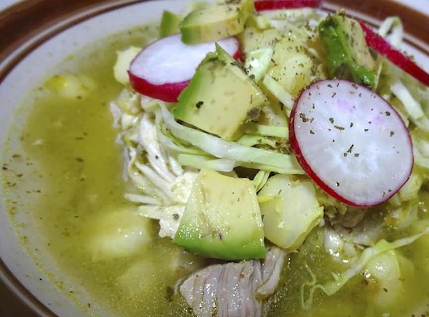

ingredientes:
5L de Agua
1 Cebolla cortada a la mitad
2 Dientes de Ajo
1Kg de Maíz pozolero precocido
2 1/2 Cucharadas de Sal
5 Hojas de laurel
1Kg de Pulpa de cerdo cortada en trozos
1/2 Kilogramo de Espinazo de cerdo cortado en trozos
1Cda de Orégano seco
15 Tomates verdes asados
3/4 Cebolla asada
2 Dientes de Ajo asados
4 Chiles serrano asados
3/4Tz de Pepitas verdes asadas
20 Ramitas de Cilantro fresco desinfectado
10 Rodajas de Rábano desinfectadas
1Cda de Comino molido
1Cda de Pimienta negra molida
1/2Cda de Sal
1Cda de Manteca de cerdo
1 Ramita de Epazote desinfectado
4 Rábanos cortados en rodajas delgadas
1/2 Lechuga romana desinfectada y fileteada
1/4 Cebolla picada finamente
1Cda de Orégano seco
3 Limones (su jugo)
duración aprx: 160min cantidad: 6 porciones
Preparacion:
En una olla, calienta el agua con 1 cebolla, 2 dientes de ajo, el maíz y cocina por 1 hora con 20 minutos a fuego alto o hasta que el maíz reviente. Añade 2 ½ cucharadas de sal, las hojas de laurel, la pulpa y el espinazo de cerdo; cocina por 1 hora con 25 minutos o hasta que la carne esté suave. Retira el ajo, la cebolla, las hojas de laurel y la pulpa de cerdo, deshébrala y reserva.
Licúa 1 cucharada de orégano con los tomates verdes, ¾ cebolla asada, 2 ajos asados, el chile serrano, la pepita verde, el cilantro, las hojas de rábano, el comino, la pimienta y ½ cucharada de sal. Calienta la manteca, vierte lo que licuaste y cocina hasta que espese. Agrega el epazote y la mezcla anterior a la olla con el maíz; cocina por 30 minutos más.
Sirve el pozole y acompaña con los rábanos, la lechuga, el ¼ de cebolla picada, 1 cucharada de orégano, el limón y las tostadas